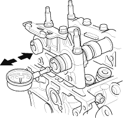
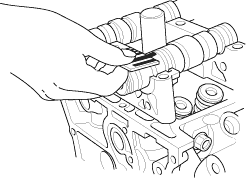

- Seat the camshaft by pushing it away from the camshaft pulley end of the cylinder head.
- Zero the dial indicator against the end of the camshaft, then push the camshaft back and forth and read the end play. If the end play is beyond the service limit, replace the cylinder head and recheck. If it is still beyond the service limit, replace the camshaft.
Camshaft End Play:
Standard (New):
0.05 - 0.20 mm
(0.002 - 0.008 in.)
Service Limit:
0.4 mm (0.02 in.)


- Unscrew the camshaft holder bolts two turns at a time, in a crisscross pattern. Then remove the camshaft holders from the cylinder head.
- Lift the camshafts out of the cylinder head, wipe them clean, then inspect the lift ramps. Replace the camshaft if any lobes are pitted, scored, or excessively worn.
- Clean the camshaft journal surfaces in the cylinder head, then set the camshafts back in place. Place a plastigage strip across each journal.
- Install the camshaft holders, then tighten the bolts to the specified torque as shown in step 2.
- Remove the camshaft holders. Measure the widest portion of plastigage on each journal.
- If the camshaft-to-holder clearance is within limits, go to step 11.
- If the camshaft-to-holder clearance is beyond the service limit and the camshaft has been replaced, replace the cylinder head.
- If the camshaft-to-holder clearance is beyond the service limit and the camshaft has not been replaced, go to step 10.
Camshaft-to-Holder Oil Clearance:
Standard (New):
No. 1 Journal:
0.030 - 0.069 mm
(0.001 - 0.003 in.)
No. 2, 3, 4, 5 Journals:
0.060 - 0.099 mm (0.002 - 0.004 in.)
Service Limit:
0.15 mm (0.006 in.)
